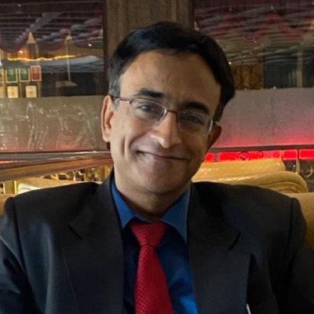
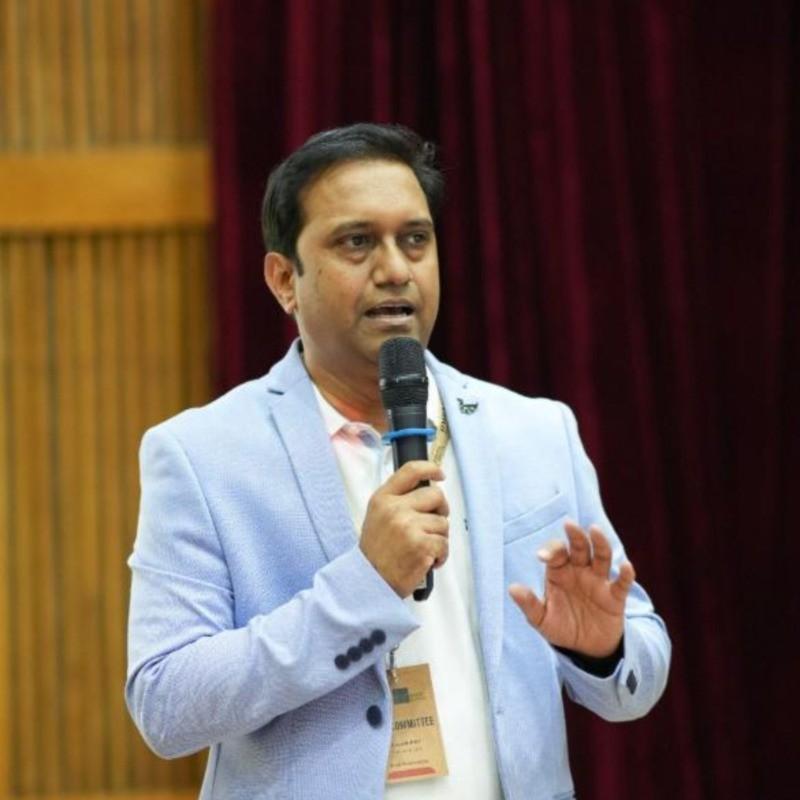

Step into the IIM Bangalore campus and reconnect.
IIMBAA · BFSI SPECIAL INTEREST GROUP
Reimagining
BFSI
Leading India's Intelligent Future
SCROLL TO ENTER THE CONVERSATION
01 / THE EXPERIENCE
What does
BFSINext feel like?
One room. Many perspectives. A conversation that moves beyond technology and trend hype to ask how innovation can build inclusion, resilience and trust in financial services.
20+Global CXOs
400+Delegates
1IIMB community
Meet alumni, practitioners, entrepreneurs and leaders.
Question assumptions and hear different perspectives.
Leave with ideas for what comes next.
YOU HAD TO BE THERE.The room becomes
The room becomes
the story.
02 / THE CONVERSATIONS
The questions
that matter.
The 2025 programme explored purpose and trust, AI, insurance, financial inclusion, GCCs, wealth and the future workforce.
Purpose
& Trust
Innovating with purpose and trust.
AI
in Command
Shaping the future with intelligent systems.
Insurance
Next
Innovating customer experience for a trusted future.
GCCs
India's growth catalysts.
Money
Matters
Navigating today's wealth instruments.
The Future
Forward
Workforce and talent perspectives.
03 / THE PEOPLE
Who was
in the room?
Selected speakers from BFSINext 2025. The 2026 speaker lineup can replace these cards when confirmed.

Rishikesha T. KrishnanProfessor of Strategy, IIM Bangalore

B.G. MaheshCEO, Sahamati

Rohit KumarGlobal Head AI & Analytics, HCLTech

Prashant MekarajMD – Software Engineering, JPMorgan Chase & Co.

Alex OusephCTO – India & Philippines, Wells Fargo

Vishal SikandJoint President – Commercial Business & Claims, HDFC ERGO
Rangaswamy S. K.Chief Risk Officer & Head – FCU, Cholamandalam MS General Insurance
Satish GrampurohitCEO, Cogniquest AI
04 / THE ARCHIVE
Before October 10,
look back.
A living archive for the BFSI SIG — built to make the past useful and the next edition easier to imagine.
2025
BFSINext
Innovate · Connect · Trust
AIInsuranceGCCsWealthInclusionTalent
THE NEXT CONVERSATION
REIMAGINING
BFSI
Leading India's Intelligent Future
10.10.2026 · IIM BANGALORE
Be part of the conversation →